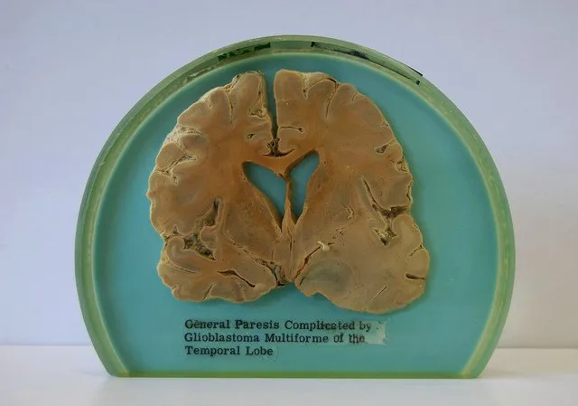
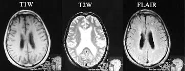

Expanded Nursing Uganda Explanation
General Paralysis of Insane should be understood beyond a short definition. Link the concept to patient history, focused assessment, common risks, nursing priorities, documentation and evaluation of outcomes.
01 General Paralysis of the Insane (GPI)
General Paralysis of the Insane (GPI) , also known as general paresis , paralytic dementia , or syphilitic paresis , is a severe neuropsychiatric disorder classified as an organic mental disorder.
It is a late-stage manifestation of untreated syphilis , resulting from chronic meningoencephalitis and progressive cerebral atrophy .
GPI primarily affects the frontal and temporal lobar cortex , leading to profound cognitive, behavioral, and motor impairments .
The condition was once a leading cause of psychiatric institutionalization before the advent of penicillin treatment .
It still persists in areas with limited access to healthcare , affecting approximately 7% of individuals with untreated syphilis , with a higher prevalence in men than women .
02 Signs and Symptoms of General Paralysis of Insane
The onset of GPI typically occurs 10 to 30 years after initial syphilis infection and progresses in stages, beginning with subtle neurological symptoms and culminating in severe dementia and motor dysfunction.
1. Early Signs and Symptoms
The initial phase is often subtle and nonspecific , leading to misdiagnosis in its early stages. Symptoms may include:
Neurasthenia (nervous exhaustion) with:
- Chronic fatigue
- Headaches
- Dizziness
- Insomnia (sleep disturbances)
- Generalized muscle weakness
2. Progressive Neuropsychiatric Symptoms
As the disease advances, cognitive and personality changes become apparent, including:
Cognitive Dysfunction
- Gradual impairment of judgment
- Short-term memory loss
- Diminished concentration and attention span
- Confusion and disorientation
Personality and Behavioral Changes
- Loss of social inhibitions → inappropriate behavior, impulsivity
- Euphoria → periods of excessive joy or excitement
- Mania → abnormally elevated mood, hyperactivity, grandiosity
- Depression → persistent sadness, loss of interest, suicidal ideation
- Apathy → lack of interest or concern about surroundings
- Irritability and aggression
Psychotic Features
Delusions, which may be:
- Grandiose : exaggerated sense of self-importance (e.g., believing oneself to be a ruler or deity)
- Paranoid : irrational fears of persecution
- Nihilistic : belief in one’s own death or the end of the world
- Melancholic : overwhelming guilt, self-blame, or extreme self-deprecation
- Hypochondriacal : bizarre beliefs about non-existent physical illnesses
Speech and Motor Symptoms
- Subtle shivering or tremors
- Dysarthria → slurred, difficult speech due to motor dysfunction
- Fine motor skill deterioration → difficulty in writing or grasping objects
- Gait disturbances → difficulty walking, imbalance
3. Late-Stage Symptoms
Without treatment, severe neurological deterioration sets in, often leading to complete disability.
Severe Motor Dysfunction
- Intention tremors → worsens with voluntary movement
- Hyperreflexia → exaggerated reflex responses
- Myoclonic jerks → involuntary, irregular muscle twitching
- Seizures , including status epilepticus (life-threatening prolonged seizures)
- Severe muscle wasting (cachexia)
- Loss of bladder and bowel control
Cognitive and Psychological Deterioration
- Profound memory loss
- Severe confusion and disorientation
- Complete inability to recognize family or surroundings
- Mutism (inability to speak)
End-Stage Complications
- Bedridden state → high risk of pressure sores, infections
- Aspiration pneumonia → due to difficulty swallowing
- Progressive malnutrition → weight loss, muscle atrophy
- Fatal systemic complications → pneumonia, sepsis, or organ failure
Eventually, the patient succumbs in a state of extreme frailty, confusion, and neurological dysfunction .
03 Diagnosis of GPI
1. Clinical Evaluation
- Detailed medical history, particularly of untreated syphilis
- Neurological examination → assessing motor, cognitive, and psychiatric symptoms
2. Laboratory Tests
Serologic Testing for Syphilis:
- Venereal Disease Research Laboratory (VDRL) test
- Rapid Plasma Reagin (RPR) test
- Treponema pallidum particle agglutination (TP-PA) test
Cerebrospinal Fluid (CSF) Analysis:
- CSF VDRL test → definitive for neurosyphilis
- Elevated protein levels and pleocytosis (increased white blood cells)
3. Neuroimaging
- MRI and CT scans to detect cerebral atrophy, ventricular dilation, and frontal/temporal lobe degeneration
- Electroencephalography (EEG) → may reveal diffuse slowing
4. Neuropsychological Testing
- Mini-Mental State Examination (MMSE) or Montreal Cognitive Assessment (MoCA) to assess cognitive decline
04 Comprehensive Treatment of General Paralysis of the Insane (GPI)
Aims of Management
The treatment of General Paralysis of the Insane (GPI) requires a multidisciplinary approach focusing on;
- eradicating the syphilitic infection,
- managing neurological and psychiatric symptoms,
- preventing complications, and rehabilitation.
While antibiotic therapy halts disease progression , neurological and psychiatric damage is often irreversible , necessitating long-term supportive care.
1. Antibiotic Therapy (Primary Treatment)
Since GPI is caused by Treponema pallidum, antibiotics remain the cornerstone of treatment .
First-Line Treatment: Intravenous (IV) Penicillin G
- Penicillin G (IV, aqueous crystalline) is the most effective treatment .
- Standard dose : 18-24 million units/day, administered every 4 hours or via continuous infusion for 10-14 days.
- After completing IV therapy, an additional intramuscular (IM) dose of Benzathine Penicillin G (2.4 million units weekly for 3 weeks) may be recommended to ensure eradication.
Alternative Treatments (for Penicillin-Allergic Patients)
- Ceftriaxone (IV/IM) 2 g daily for 10-14 days – Preferred alternative to penicillin.
- Doxycycline (oral) 200 mg daily for 28 days – Used when IV therapy is not an option, but less effective.
- Azithromycin or Tetracyclines – Considered in cases where penicillin and ceftriaxone cannot be used, though efficacy is debated.
Jarisch-Herxheimer Reaction
Some patients experience a systemic inflammatory reaction 6-12 hours after starting antibiotics, characterized by:
- Fever, chills
- Headache, muscle aches
- Worsening neurological symptoms (temporary)
Managed with antipyretics (e.g., ibuprofen, acetaminophen) and supportive care.
2. Corticosteroid Therapy (For Inflammation and Immune Response Modulation)
Corticosteroids (e.g., Prednisone, Dexamethasone) are often administered before or alongside antibiotics to reduce inflammation and brain swelling caused by the immune response to Treponema pallidum.
Indications for corticosteroids:
- Patients with severe neurosyphilis symptoms, including brain edema and increased intracranial pressure.
- Those at high risk of Jarisch-Herxheimer reaction.
Typical regimen:
- Prednisone 40-60 mg/day for 3-5 days, then taper gradually over 1-2 weeks.
3. Neurological and Psychiatric Symptom Management
GPI causes significant neuropsychiatric complications, requiring medications to manage mood disorders, psychosis, and motor symptoms.
Cognitive and Neuropsychiatric Treatment
- Cholinesterase inhibitors (e.g., Donepezil, Rivastigmine) – May provide modest cognitive improvement.
- Memantine (NMDA receptor antagonist) – Used to slow cognitive decline.
Mood Disorders (Depression, Mania, Apathy, Euphoria)
- Selective serotonin reuptake inhibitors (SSRIs) (e.g., Sertraline, Fluoxetine) – For depression and anxiety.
- Mood stabilizers (e.g., Lithium, Valproate, Carbamazepine) – For mania and euphoria.
Psychotic Symptoms (Delusions, Hallucinations, Agitation)
- Atypical antipsychotics (e.g., Risperidone, Quetiapine, Olanzapine) – Manage delusions and hallucinations.
- Benzodiazepines (e.g., Lorazepam, Clonazepam) – Used short-term for agitation and anxiety.
Seizure Management
- Anticonvulsants (e.g., Levetiracetam, Valproate, Phenytoin) – Prevent seizures and myoclonic jerks.
Motor Dysfunction Management
- Dopaminergic agents (e.g., Levodopa, Amantadine) – May help in managing motor dysfunction if parkinsonian features emerge.
- Baclofen or Tizanidine – For spasticity and hyperreflexia.
4. Supportive and Symptomatic Treatment
Pain Management
- Neuropathic pain can occur due to nerve damage.
- Gabapentin, Pregabalin, or Amitriptyline may be used for neuropathic pain relief.
- NSAIDs (e.g., Ibuprofen, Naproxen) or Acetaminophen for general discomfort.
Bladder and Bowel Dysfunction Management
- Intermittent catheterization or indwelling urinary catheter for neurogenic bladder.
- Laxatives (e.g., Lactulose, Bisacodyl) to prevent constipation due to immobility.
Speech and Swallowing Therapy
- Dysarthria (speech difficulties) and dysphagia (swallowing issues) require speech therapy.
- Patients with severe swallowing difficulties may need feeding tube placement.
5. Rehabilitation and Long-Term Care
Physical and Occupational Therapy
- Gait training and muscle strengthening exercises help maintain mobility.
- Assistive devices (e.g., canes, walkers, wheelchairs) aid in movement.
- Occupational therapy focuses on daily living skills and cognitive retraining.
Psychosocial Support and Caregiver Training
- Psychological counseling to help patients and families cope with the diagnosis.
- Social services involvement to assist with long-term care planning.
Preventing Complications in Advanced GPI
- Bedridden patients require frequent repositioning to prevent pressure ulcers.
- Aspiration precautions should be taken in patients with difficulty swallowing.
- Respiratory therapy may be needed to prevent pneumonia and aspiration-related complications.
6. Preventive Strategies and Public Health Measures
Syphilis Screening and Early Treatment
- Routine screening in at-risk populations (e.g., sex workers, people with multiple partners, men who have sex with men).
- Testing during pregnancy to prevent congenital syphilis.
Education and Awareness
- Public health programs should focus on increasing awareness of syphilis symptoms and importance of early antibiotic treatment.
Vaccination and Additional Health Measures
- No vaccine exists for syphilis, but safe sex practices and routine STI screenings can reduce the risk.
Prognosis
- Early antibiotic treatment can halt progression but does not reverse existing neurological damage.
- Without treatment, GPI is fatal within 2-5 years.
- Cognitive and motor deficits often persist, requiring long-term supportive care.
- Early diagnosis and multidisciplinary treatment significantly improve quality of life and life expectancy.
05 Nursing Care Plan: General Paralysis of the Insane (Neurosyphilis)
- Assessment Nursing Diagnosis Goals/Expected Outcomes Interventions Rationale Evaluation
- Patient presents with cognitive impairment, psychotic symptoms, tremors, weakness, speech disturbances, and personality changes. History of untreated syphilis. Impaired Cognitive Function related to neurosyphilitic degeneration as evidenced by memory loss, confusion, and disorganized thoughts. – Patient will demonstrate improved orientation and cognitive function. – Patient will engage in structured activities to enhance cognitive ability. – Patient will be able to follow simple instructions and recall basic information. 1. Assess cognitive function using tools like the Mini-Mental State Exam (MMSE). 2. Provide a structured routine to reduce confusion. 3. Use simple, clear language for communication. 4. Engage patient in cognitive stimulation activities (puzzles, memory games). 5. Collaborate with a neurologist and psychiatrist for medical management. 1. Helps track the progression of cognitive decline. 2. Reduces anxiety and enhances understanding. 3. Improves communication and comprehension. 4. Maintains cognitive function as much as possible. 5. Ensures multidisciplinary care for better symptom control. – Patient shows improved attention and recall. – Patient responds to structured routines. – Patient engages in cognitive stimulation activities.
- Patient exhibits hallucinations, delusions, and erratic behavior. Displays paranoia and emotional instability. Disrupted Thought Processes related to central nervous system syphilitic infection as evidenced by hallucinations, delusions, and impaired judgment. – Patient will demonstrate reduced psychotic symptoms with treatment. – Patient will differentiate between reality and hallucinations. – Patient will remain safe from self-harm. 1. Monitor for signs of psychosis and escalating agitation. 2. Provide reassurance and reality orientation techniques. 3. Administer prescribed antipsychotic medications as indicated. 4. Ensure a safe environment by removing potential hazards. 5. Engage patient in psychotherapy and structured activities. 1. Prevents exacerbation of psychotic symptoms. 2. Helps patient stay grounded in reality. 3. Reduces hallucinations and delusions. 4. Minimizes the risk of self-harm or injury. 5. Supports mental stabilization and recovery. – Patient shows reduced psychotic symptoms. – Patient interacts appropriately with others. – Patient remains free from harm.
- Patient demonstrates difficulty in walking, tremors, muscle weakness, and incoordination. Impaired Physical Mobility related to neuromuscular degeneration as evidenced by tremors, unsteady gait, and weakness. – Patient will demonstrate improved mobility with assistance. – Patient will use assistive devices safely. – Patient will participate in physical therapy. 1. Encourage physical therapy and daily mobility exercises. 2. Provide assistive devices like walkers or canes. 3. Assist patient with activities of daily living (ADLs) as needed. 4. Monitor for falls and ensure a safe environment. 5. Administer medications to manage neurological symptoms as prescribed. 1. Helps maintain muscle strength and coordination. 2. Promotes independence and mobility. 3. Ensures patient safety and hygiene. 4. Reduces fall risk and prevents injuries. 5. Aims to slow neuromuscular degeneration. – Patient engages in mobility exercises. – Patient uses assistive devices safely. – Patient remains free from falls.
- Patient is unable to perform basic self-care due to cognitive and motor decline. Requires assistance with dressing, feeding, and hygiene. Self-Care Deficit related to cognitive and neuromuscular impairment as evidenced by inability to perform ADLs. – Patient will participate in self-care activities with assistance. – Patient will use adaptive techniques to maintain independence. – Caregivers will provide necessary support without compromising dignity. 1. Assist with ADLs while promoting independence. 2. Encourage the use of adaptive utensils and clothing. 3. Educate caregivers on safe and effective patient care. 4. Maintain a structured daily routine to enhance participation. 5. Provide emotional support to reduce frustration. 1. Ensures patient maintains a level of independence. 2. Facilitates easier self-care activities. 3. Prevents caregiver burnout and ensures optimal care. 4. Helps the patient anticipate and engage in daily activities. 5. Reduces psychological distress related to dependency. – Patient engages in ADLs with assistance. – Caregivers demonstrate effective support. – Patient maintains dignity in care.
- Patient expresses frustration, sadness, and withdrawal from social interactions. Risk for chronic confusion related to disease progression and cognitive decline as evidenced by social withdrawal and feelings of helplessness. – Patient will verbalize feelings and coping strategies. – Patient will engage in social interactions and therapy. – Patient will demonstrate improved mood and reduced distress. 1. Encourage expression of emotions and frustrations. 2. Provide a supportive and nonjudgmental environment. 3. Engage patient in social activities and support groups. 4. Administer prescribed antidepressants if indicated. 5. Monitor for suicidal ideation and refer to psychiatric care if needed. 1. Helps process emotions and reduces distress. 2. Promotes trust and comfort. 3. Prevents isolation and enhances emotional well-being. 4. Supports mental stability and recovery. 5. Ensures early intervention for severe depression. – Patient verbalizes emotions and coping strategies. – Patient engages in social activities. – Patient reports improved mood.
NANDA 2024-26
06 Nursing Uganda Clinical Lens
Use General Paralysis of Insane as a practical nursing topic, not only a memorized definition. Start with normal structure and function, then connect it to assessment findings and disease.
- What to understand first: define general paralysis of insane, identify the normal or expected pattern, then explain what changes when the patient is unwell.
- Why it matters in care: the nurse must recognize risk early, explain findings clearly, document accurately and know when to escalate.
- How to revise it: connect each point to assessment, nursing diagnosis or care problem, intervention, rationale and evaluation.
07 Assessment Guide
- Relevant inspection, palpation, movement, auscultation, vital signs or neurological checks.
- Normal findings, abnormal findings and what each abnormality may indicate.
- Patient history, risk factors and how the body system affects other systems.
08 Nursing Priorities, Rationales and Outcomes
- Use anatomy to explain symptoms and guide focused assessment.
- Recognize findings that need urgent escalation.
- Teach the patient using simple body-system language.
The rationale for these priorities is patient safety: nursing actions should prevent deterioration, reduce discomfort, support recovery and create clear evidence for the next caregiver.
- Expected outcome: The learner can explain normal function, identify abnormal signs and connect them to nursing action.
09 Patient Teaching and Revision Check
- Explain general paralysis of insane in simple language the patient or caregiver can repeat back.
- Teach warning signs, medicine or follow-up instructions, hygiene or lifestyle points where relevant.
- For exams, prepare a short answer using: definition, causes or risk factors, signs, assessment, management, complications and prevention.
- For ward practice, document baseline findings, actions taken, patient response and the plan for review.
Illustrations and Diagrams (3)


Related Video Lectures
Watch nursing lecture videos on YouTube for this topic. Opens in a new tab.
Watch on YouTubeExternal link: YouTube may use its own cookies and terms. Nursing Uganda is not affiliated with YouTube.